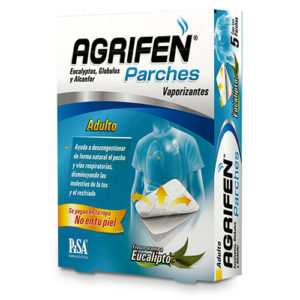

El farmacéutico, tu aliado en salud


Para Aliviar El Dolor Ligero O Moderado De Dolores De Cabeza, Dolores Musculares, Períodos Menstruales, Resfriados Y Gargantas Irritadas, Dolores De Muelas, Dolores De Espalda Y Para Reducir La Fiebre.
Es Un Antiinflamatorio Y Analgésico Indicado Para Aliviar Varios Tipos De Dolor, Inflamación Y Fiebre,Dolor De Cabeza,Dolores Menstrual,Producida Por Infecciones Agudas De Las Vías Respiratorias Superiores.

Si No Hay Complicaciones La Duración De Los Síntomas Gripales Es Entre 5 Y 10 Días.Otros Síntomas Puede Durar Más Días Como La Tos Seca (7 A 10 Días) Y El Cansancio Pueden Hasta 2 Semanas.